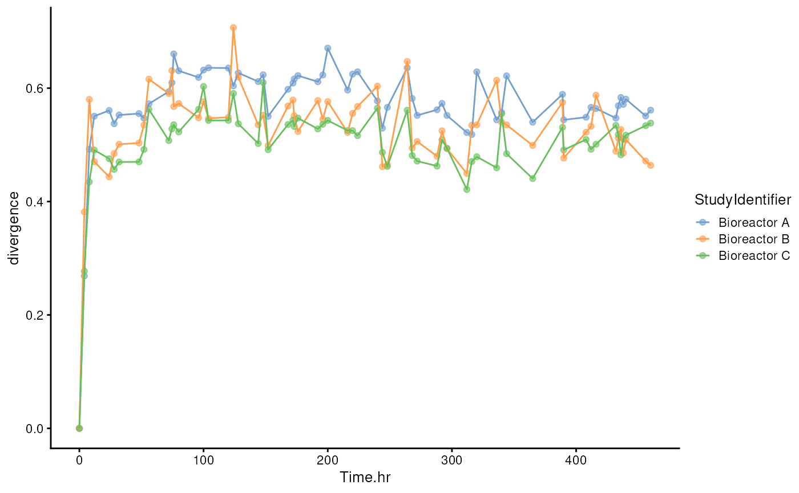
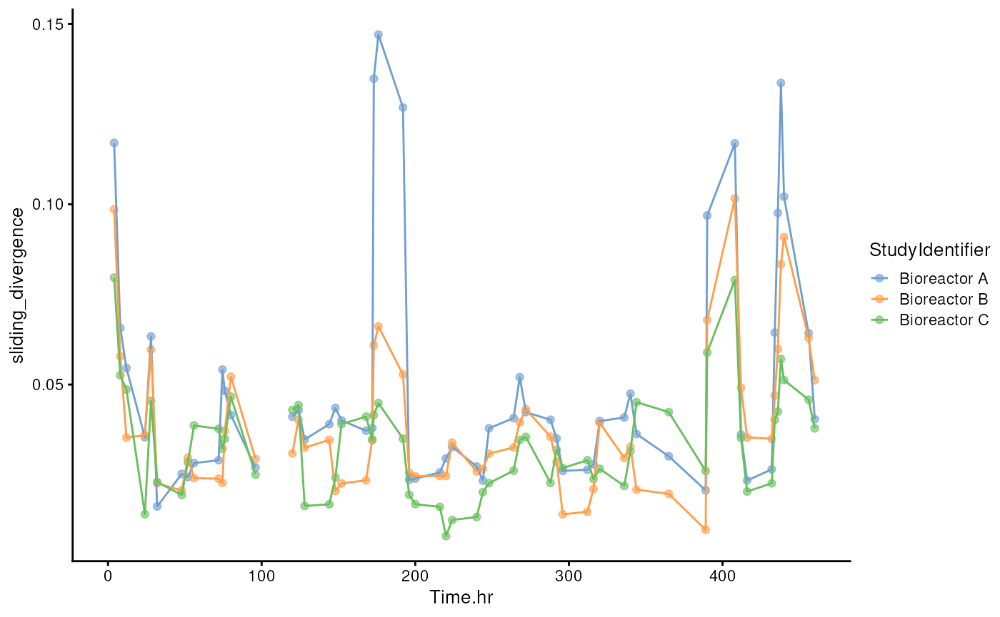

Dense samples of the minimal gut microbiome. In the initial hours,
MDb-MM was grown under batch condition and 24 h onwards, continuous
feeding of media with pulse feeding cycles. This information is stored
in the colData.
library(miaTime)
#> Loading required package: mia
#> Loading required package: MultiAssayExperiment
#> Loading required package: SummarizedExperiment
#> Loading required package: MatrixGenerics
#> Loading required package: matrixStats
#>
#> Attaching package: 'MatrixGenerics'
#> The following objects are masked from 'package:matrixStats':
#>
#> colAlls, colAnyNAs, colAnys, colAvgsPerRowSet, colCollapse,
#> colCounts, colCummaxs, colCummins, colCumprods, colCumsums,
#> colDiffs, colIQRDiffs, colIQRs, colLogSumExps, colMadDiffs,
#> colMads, colMaxs, colMeans2, colMedians, colMins, colOrderStats,
#> colProds, colQuantiles, colRanges, colRanks, colSdDiffs, colSds,
#> colSums2, colTabulates, colVarDiffs, colVars, colWeightedMads,
#> colWeightedMeans, colWeightedMedians, colWeightedSds,
#> colWeightedVars, rowAlls, rowAnyNAs, rowAnys, rowAvgsPerColSet,
#> rowCollapse, rowCounts, rowCummaxs, rowCummins, rowCumprods,
#> rowCumsums, rowDiffs, rowIQRDiffs, rowIQRs, rowLogSumExps,
#> rowMadDiffs, rowMads, rowMaxs, rowMeans2, rowMedians, rowMins,
#> rowOrderStats, rowProds, rowQuantiles, rowRanges, rowRanks,
#> rowSdDiffs, rowSds, rowSums2, rowTabulates, rowVarDiffs, rowVars,
#> rowWeightedMads, rowWeightedMeans, rowWeightedMedians,
#> rowWeightedSds, rowWeightedVars
#> Loading required package: GenomicRanges
#> Loading required package: stats4
#> Loading required package: BiocGenerics
#>
#> Attaching package: 'BiocGenerics'
#> The following objects are masked from 'package:stats':
#>
#> IQR, mad, sd, var, xtabs
#> The following objects are masked from 'package:base':
#>
#> anyDuplicated, aperm, append, as.data.frame, basename, cbind,
#> colnames, dirname, do.call, duplicated, eval, evalq, Filter, Find,
#> get, grep, grepl, intersect, is.unsorted, lapply, Map, mapply,
#> match, mget, order, paste, pmax, pmax.int, pmin, pmin.int,
#> Position, rank, rbind, Reduce, rownames, sapply, saveRDS, setdiff,
#> table, tapply, union, unique, unsplit, which.max, which.min
#> Loading required package: S4Vectors
#>
#> Attaching package: 'S4Vectors'
#> The following object is masked from 'package:utils':
#>
#> findMatches
#> The following objects are masked from 'package:base':
#>
#> expand.grid, I, unname
#> Loading required package: IRanges
#> Loading required package: GenomeInfoDb
#> Loading required package: Biobase
#> Welcome to Bioconductor
#>
#> Vignettes contain introductory material; view with
#> 'browseVignettes()'. To cite Bioconductor, see
#> 'citation("Biobase")', and for packages 'citation("pkgname")'.
#>
#> Attaching package: 'Biobase'
#> The following object is masked from 'package:MatrixGenerics':
#>
#> rowMedians
#> The following objects are masked from 'package:matrixStats':
#>
#> anyMissing, rowMedians
#> Loading required package: SingleCellExperiment
#> Loading required package: TreeSummarizedExperiment
#> Loading required package: Biostrings
#> Loading required package: XVector
#>
#> Attaching package: 'Biostrings'
#> The following object is masked from 'package:base':
#>
#> strsplit
#> This is mia version 1.15.3
#> - Online documentation and vignettes: https://microbiome.github.io/mia/
#> - Online book 'Orchestrating Microbiome Analysis (OMA)': https://microbiome.github.io/OMA/docs/devel/
data(minimalgut)
tse <- minimalgut
# Quick check of number of samples
table(tse[["StudyIdentifier"]], tse[["condition_1"]])
#>
#> batch_carbs DoS pulse Overnight
#> Bioreactor A 4 38 19
#> Bioreactor B 4 38 19
#> Bioreactor C 4 38 19Visualize samples available for each of the bioreactors. This allows to identify if there are any missing samples for specific times.
library(ggplot2)
colData(tse) |>
ggplot() +
geom_tile(
aes(x = as.factor(Time.hr), y = StudyIdentifier, fill = condition_1))The minimalgut dataset, mucus-diet based minimal
microbiome (MDbMM-16), consists of 16 species assembled in three
bioreactors. We can investigate the succession of mdbMM16 from the start
of experiment here hour zero until the end of the experiment.
# Transform data to relativeS
tse <- transformAssay(tse, method = "relabundance")
# Divergence from baseline i.e from hour zero
tse <- addBaselineDivergence(
tse,
assay.type = "relabundance",
method = "bray",
group = "StudyIdentifier",
time.col = "Time.hr",
)Let’s then visualize the divergence.
library(scater)
#> Loading required package: scuttle
# Create a time series plot for divergence
p <- plotColData(
tse, x = "Time.hr", y = "divergence", colour_by = "StudyIdentifier") +
# Add line between points
geom_line(aes(group = .data[["colour_by"]], colour = .data[["colour_by"]]))
p
Now visualize abundance of Blautia hydrogenotrophica using
the miaViz::plotSeries() function.
library(miaViz)
#> Loading required package: ggraph
#>
#> Attaching package: 'miaViz'
#> The following object is masked from 'package:mia':
#>
#> plotNMDS
# Plot certain feature by time
p <- plotSeries(
tse,
x = "Time.hr", y = "Blautia_hydrogenotrophica", colour_by = "Species",
assay.type = "relabundance")
pSample dissimilarity between consecutive time steps(step size n >=
1) within a group(subject, age, reaction chamber, etc.) can be
calculated by addStepwiseDivergence.
# Divergence between consecutive time points
tse <- addStepwiseDivergence(
tse,
assay.type = "relabundance",
method = "bray",
group = "StudyIdentifier",
time.interval = 1,
time.col = "Time.hr",
name = "divergence_from_previous_step",
name.time = "time_from_previous_step"
)The results are again stored in colData. We calculate
the speed of divergence change by dividing each divergence change by the
corresponding change in time. Then we use similar plotting methods as
previously.
# Calculate slope for the change
tse[["divergence_change"]] <- tse[["divergence_from_previous_step"]] /
tse[["time_from_previous_step"]]
# Create a time series plot for divergence
p <- plotColData(
tse,
x = "Time.hr",
y = "divergence_change",
colour_by = "StudyIdentifier"
) +
# Add line between points
geom_line(aes(group = .data[["colour_by"]], colour = .data[["colour_by"]]))
p
#> Warning: Removed 3 rows containing missing values or values outside the scale range
#> (`geom_point()`).
#> Warning: Removed 3 rows containing missing values or values outside the scale range
#> (`geom_line()`).This shows how to calculate and plot moving average for the variable of interest (here: slope).
library(dplyr)
#>
#> Attaching package: 'dplyr'
#> The following objects are masked from 'package:mia':
#>
#> full_join, inner_join, left_join, right_join
#> The following objects are masked from 'package:Biostrings':
#>
#> collapse, intersect, setdiff, setequal, union
#> The following object is masked from 'package:XVector':
#>
#> slice
#> The following object is masked from 'package:Biobase':
#>
#> combine
#> The following objects are masked from 'package:GenomicRanges':
#>
#> intersect, setdiff, union
#> The following object is masked from 'package:GenomeInfoDb':
#>
#> intersect
#> The following objects are masked from 'package:IRanges':
#>
#> collapse, desc, intersect, setdiff, slice, union
#> The following objects are masked from 'package:S4Vectors':
#>
#> first, intersect, rename, setdiff, setequal, union
#> The following objects are masked from 'package:BiocGenerics':
#>
#> combine, intersect, setdiff, union
#> The following object is masked from 'package:matrixStats':
#>
#> count
#> The following objects are masked from 'package:stats':
#>
#> filter, lag
#> The following objects are masked from 'package:base':
#>
#> intersect, setdiff, setequal, union
# Calculate moving average with time window of 3 time points
tse[["sliding_divergence"]] <- colData(tse) |>
as.data.frame() |>
# Group based on reactor
group_by(StudyIdentifier) |>
# Calculate moving average
mutate(sliding_avg = (
# We get the previous 2 samples
lag(divergence_change, 2) +
lag(divergence_change, 1) +
# And the current sample
divergence_change
# And take average
) / 3
) |>
# Get only the values as vector
ungroup() |>
pull(sliding_avg)After calculating the moving average of divergences, we can visualize the result in a similar way to our previous approach.
# Create a time series plot for divergence
p <- plotColData(
tse,
x = "Time.hr",
y = "sliding_divergence",
colour_by = "StudyIdentifier"
) +
# Add line between points
geom_line(aes(group = .data[["colour_by"]], colour = .data[["colour_by"]]))
p
#> Warning: Removed 9 rows containing missing values or values outside the scale range
#> (`geom_point()`).
#> Warning: Removed 3 rows containing missing values or values outside the scale range
#> (`geom_line()`).
sessionInfo()
#> R Under development (unstable) (2024-11-20 r87352)
#> Platform: x86_64-pc-linux-gnu
#> Running under: Ubuntu 24.04.1 LTS
#>
#> Matrix products: default
#> BLAS: /usr/lib/x86_64-linux-gnu/openblas-pthread/libblas.so.3
#> LAPACK: /usr/lib/x86_64-linux-gnu/openblas-pthread/libopenblasp-r0.3.26.so; LAPACK version 3.12.0
#>
#> locale:
#> [1] LC_CTYPE=en_US.UTF-8 LC_NUMERIC=C
#> [3] LC_TIME=en_US.UTF-8 LC_COLLATE=en_US.UTF-8
#> [5] LC_MONETARY=en_US.UTF-8 LC_MESSAGES=en_US.UTF-8
#> [7] LC_PAPER=en_US.UTF-8 LC_NAME=C
#> [9] LC_ADDRESS=C LC_TELEPHONE=C
#> [11] LC_MEASUREMENT=en_US.UTF-8 LC_IDENTIFICATION=C
#>
#> time zone: UTC
#> tzcode source: system (glibc)
#>
#> attached base packages:
#> [1] stats4 stats graphics grDevices utils datasets methods
#> [8] base
#>
#> other attached packages:
#> [1] dplyr_1.1.4 miaViz_1.14.0
#> [3] ggraph_2.2.1 scater_1.34.0
#> [5] scuttle_1.16.0 ggplot2_3.5.1
#> [7] miaTime_0.99.0 mia_1.15.3
#> [9] TreeSummarizedExperiment_2.14.0 Biostrings_2.74.0
#> [11] XVector_0.46.0 SingleCellExperiment_1.28.0
#> [13] MultiAssayExperiment_1.32.0 SummarizedExperiment_1.36.0
#> [15] Biobase_2.66.0 GenomicRanges_1.58.0
#> [17] GenomeInfoDb_1.42.0 IRanges_2.40.0
#> [19] S4Vectors_0.44.0 BiocGenerics_0.52.0
#> [21] MatrixGenerics_1.18.0 matrixStats_1.4.1
#> [23] knitr_1.49 BiocStyle_2.34.0
#>
#> loaded via a namespace (and not attached):
#> [1] splines_4.5.0 ggplotify_0.1.2
#> [3] tibble_3.2.1 polyclip_1.10-7
#> [5] rpart_4.1.23 DirichletMultinomial_1.48.0
#> [7] lifecycle_1.0.4 lattice_0.22-6
#> [9] MASS_7.3-61 SnowballC_0.7.1
#> [11] backports_1.5.0 magrittr_2.0.3
#> [13] Hmisc_5.2-0 sass_0.4.9
#> [15] rmarkdown_2.29 jquerylib_0.1.4
#> [17] yaml_2.3.10 DBI_1.2.3
#> [19] minqa_1.2.8 abind_1.4-8
#> [21] zlibbioc_1.52.0 purrr_1.0.2
#> [23] yulab.utils_0.1.7 nnet_7.3-19
#> [25] tweenr_2.0.3 sandwich_3.1-1
#> [27] GenomeInfoDbData_1.2.13 ggrepel_0.9.6
#> [29] tokenizers_0.3.0 irlba_2.3.5.1
#> [31] tidytree_0.4.6 vegan_2.6-8
#> [33] rbiom_1.0.3 pkgdown_2.1.1
#> [35] permute_0.9-7 DelayedMatrixStats_1.28.0
#> [37] codetools_0.2-20 DelayedArray_0.32.0
#> [39] ggforce_0.4.2 tidyselect_1.2.1
#> [41] aplot_0.2.3 UCSC.utils_1.2.0
#> [43] farver_2.1.2 lme4_1.1-35.5
#> [45] ScaledMatrix_1.14.0 viridis_0.6.5
#> [47] base64enc_0.1-3 jsonlite_1.8.9
#> [49] BiocNeighbors_2.0.0 decontam_1.26.0
#> [51] tidygraph_1.3.1 Formula_1.2-5
#> [53] systemfonts_1.1.0 tools_4.5.0
#> [55] ggnewscale_0.5.0 treeio_1.30.0
#> [57] ragg_1.3.3 Rcpp_1.0.13-1
#> [59] glue_1.8.0 gridExtra_2.3
#> [61] SparseArray_1.6.0 xfun_0.49
#> [63] mgcv_1.9-1 withr_3.0.2
#> [65] BiocManager_1.30.25 fastmap_1.2.0
#> [67] boot_1.3-31 bluster_1.16.0
#> [69] fansi_1.0.6 digest_0.6.37
#> [71] rsvd_1.0.5 R6_2.5.1
#> [73] gridGraphics_0.5-1 textshaping_0.4.0
#> [75] colorspace_2.1-1 lpSolve_5.6.21
#> [77] utf8_1.2.4 tidyr_1.3.1
#> [79] generics_0.1.3 data.table_1.16.2
#> [81] DECIPHER_3.2.0 graphlayouts_1.2.0
#> [83] httr_1.4.7 htmlwidgets_1.6.4
#> [85] S4Arrays_1.6.0 pkgconfig_2.0.3
#> [87] gtable_0.3.6 janeaustenr_1.0.0
#> [89] htmltools_0.5.8.1 bookdown_0.41
#> [91] scales_1.3.0 ggfun_0.1.7
#> [93] rstudioapi_0.17.1 reshape2_1.4.4
#> [95] checkmate_2.3.2 nlme_3.1-166
#> [97] nloptr_2.1.1 cachem_1.1.0
#> [99] zoo_1.8-12 stringr_1.5.1
#> [101] parallel_4.5.0 vipor_0.4.7
#> [103] foreign_0.8-87 desc_1.4.3
#> [105] pillar_1.9.0 grid_4.5.0
#> [107] vctrs_0.6.5 slam_0.1-54
#> [109] BiocSingular_1.22.0 beachmat_2.22.0
#> [111] cluster_2.1.6 beeswarm_0.4.0
#> [113] htmlTable_2.4.3 evaluate_1.0.1
#> [115] mvtnorm_1.3-1 cli_3.6.3
#> [117] compiler_4.5.0 rlang_1.1.4
#> [119] crayon_1.5.3 tidytext_0.4.2
#> [121] labeling_0.4.3 mediation_4.5.0
#> [123] plyr_1.8.9 fs_1.6.5
#> [125] ggbeeswarm_0.7.2 stringi_1.8.4
#> [127] viridisLite_0.4.2 BiocParallel_1.40.0
#> [129] munsell_0.5.1 lazyeval_0.2.2
#> [131] Matrix_1.7-1 patchwork_1.3.0
#> [133] sparseMatrixStats_1.18.0 igraph_2.1.1
#> [135] memoise_2.0.1 RcppParallel_5.1.9
#> [137] bslib_0.8.0 ggtree_3.14.0
#> [139] ape_5.8